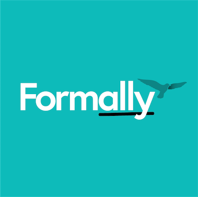
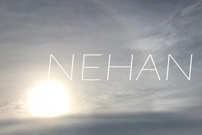
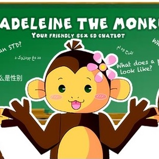
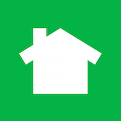
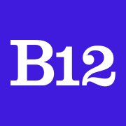

Formally
Formally is an intuitive form filler for asylum, immigration and citizenship. Formally provides guidance and translation for refugees applying for legal status. (Hack@Brown 2018 Best Real World App, Brown Venture Prize First Place, LexLab Best Pitch, LexLab Most Ready for Funding, RBPC Semi-Finalist)
This was made using: Javascript, Node.js, React.js

Nehan
Visuals and audio adapted to the user's heartrate via webcam and machine to encourage calm and de-stress. (
See it here.)
This was made using: Python, Unity, C#

Madeliene
Madeliene is a chatbot providing sexual education and local resources, targeted for middle school refugees, who cannot get access to formal sex ed due to relocation and lack of funding. (
CHIMEHACK 4 Social Good Award)
This was made using: Javascript, Node.js, Messenger API

Eliza Avidan
Eliza Avidan is an AI poet, who posts daily experimental poems to a
blog. Eliza uses a variety of generative models for poem writing, including CFGs and Deep Learning.
This was made using: Python, Tensorflow, Tumblr API

Heartbeat Ping
Heartbeat Ping is an app for the Pebble Watch that lets users send heartbeats to each other. When tapped, the watch will send its BPM to the other, which will then vibrate at that speed. Watch the signals
here.
This was made using: C, Javascript, Pebble Watch ADK
See More

Treble Clef
What's your hipster score? Treble Clef is a Spotify app that gives you recommendations and a "hipster score" of the uniqueness of your music library. Try it out
here.
This was made using: Javascript, Node.js, Heroku, Spotify API

Book Butler
Tired of googling every book title? Meet your personal Book Butler. Book Butler turns book names into
clickable links, so you can start reading that much faster.
This was made using: Javascript, Jquery, Amazon API

OurStory
OurStory is an iOS app where you and your friends film/compile 10 second videos to make collaborative stories. (HackMIT Best Use of Parse API & 1517 Grant Recipient)
This was made using: Swift, Javascript, Parse API

Brewer
Brewer is a block-based coding language designed for new programmers, running on the Java Spark framework.
This was made using: Java, Javascript, Jquery, Spark

UNeed
UNeed is a web app providing sharing and borrowing services in local communities. (
Hack@Brown Best Real World App)
This was made using: Javascript, Meteor, Google Maps API

Tensor
Tensor is an iOS app integrated with the Myo armband allowing you to record and practice dance moves, and teach those moves virtually to your friends.
This was made using: Objective-C, Myo API

Drop The Fire
Drop The Fire is a music blog for those with eclectic tastes, contributed to by an odd assortment of music enthusiasts.
This was made using: HTML, CSS, Javascript

IT
IT is a web-based collaborative riddle game, wherein you work with friends to solve riddles and journey
This was made using: HTML, CSS, PHP, SQL, Javascript

The New King
The New King is a competitive platformer with jumping, firing blocks, plus 30+ other games for
Salazar Games.
This was made using: C++, GameMaker

Nextdoor
Machine Learning Engineer Jul 2019 – Present

B12
RDV Scholar / Software Eng Intern Jun – Aug 2018
Worked on Acquisition Team to improve user experience with AI generated websites. Redesigned theme selection, allowing users to preview generated versions of their site. Implemented mobile onboarding to customize experience for primary traffic source. Improved crowdsourcing system Orchestra to speed up workflows of designers and CSMs. A/B tested improvements to evaluate user impact.
Nextdoor
KP Eng Fellow / Core Experience Intern May – Aug 2017
Worked on Web Core Experience team to implement website redesign.
Launched site nationally/internationally and responded to user issues.
Developed internal Neighborhood Operatives tools to investigate and resolve user conflict.
Adapted delivery system for engagement emails on agency platform.
Extended Anti Racial Profiling system for alerts and improved coverage.

Pinterest
Software Engineering Contractor July – Sept 2016
Developed content-focused new user emails while improving frameworks for selection algorithm testing.
Wrote database crawler to convert system-specific new user signals to system-agnostic signals for entire user database.

Highlight
Software Engineering Intern May – July 2016
Improved image displays for user suggestions in iOS photo-sharing app.
Open-sourced the lightweight iOS database framework,
LightBase.
Transitioned through acquisition of Highlight by Pinterest.
See More

Brown UPOD Lab
Researcher Jan 2015 – May 2016
Investigated Embedded Home Systems
Conducted studies on the integration of IoT technology into common households, while developing interfaces for user communication with home systems, to affect temperature, lighting, alarm systems, and appliances. Published in CHI 2016 and ACM.

Enphase Energy
Software Embedded Intern Jun – Aug 2015
Built Interfaces for Manipulating Microinverters
Developed software and user interfaces loaded onto the Envoy system, now used by testing groups and installers to intuitively change micro-inverter settings. Restructured geo-profile information and coded an updating tool for said profiles.
Brown University CS
Software Designer Dec 2014 – Jan 2015
Enabled Teaching of IOT Software
Collaborated with peers to construct integrated Spark Core models in Pyret, used to virtually test Internet of Things software in Computer Science classes.

Remote Sensing Systems
Software Engineering Intern Jun – Aug 2014
Processed Meteorilogical Satellite Data
Programmed software to retrieve and analyze meteorological data from satellite instruments, IR devices, buoys and predictive models, used by NASA, NOAA, and the scientific community. Applied experimental Gaussian fitting to help calibrate geostationary satellites.

Salazar Games
CEO / Lead Designer Oct 2011 – Aug 2014
Directed a game design company
Founded Salazar Games. Spearheaded projects with 8 game designers to build entertaining, educational games. Programmed salazargames.com, now with over 6000 downloads of 20+ games. (STEM Challenge Finalists 2013)

Investors Circle & VitalLink
Research Partner May – Aug 2010
Researched Markets For Developing Products
Collected data for competitor analysis and transferred site data for investment networking. Researched competitors for technology use in elder care.